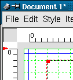
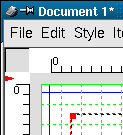

3.2.1 Seitenverwaltung
Sie können Ihrem Dokument mittels des Menüpunkts "Page" neue Seiten hinzufügen ("Insert"), bestehende löschen ("Delete") oder an eine andere
Stelle im Dokument verschieben ("Move").
3.2.2 Das Hilfsgitter
Das Hilfsgitter kann unter "View" ein- bzw. ausgeblendet werden. Es stellt eine Möglichkeit zum exakten Positionieren
von Objekten auf einer Seite dar und wird nicht mitgedruckt. Aktivieren Sie zusätzlich die Option "Snap to Guides" wenn alle
Scribus-Objekte bei Platzierungen oder Mausbewegungen magnetisch an den Hilfslinien andocken sollen:


Ist "Snap to Guides" aktiviert, werden alle Scribus-Objekte automatisch magnetisch an den Gitterlinien ausgerichtet
Ist die Funktion dagegen deaktiviert, ist wieder ein exaktes manuelles Platzieren mit der Maus möglich
Das Hilfsliniengitter können Sie unter "Edit/Prefences" und dort dann unter dem Karteireiter "Guides" einrichten.